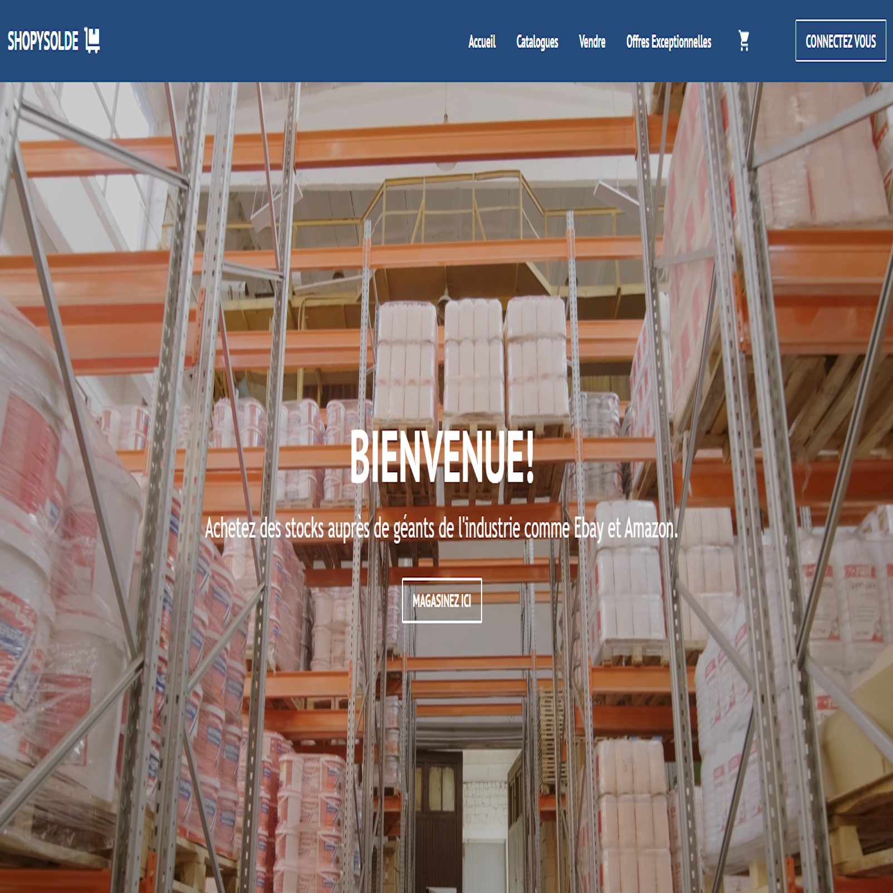
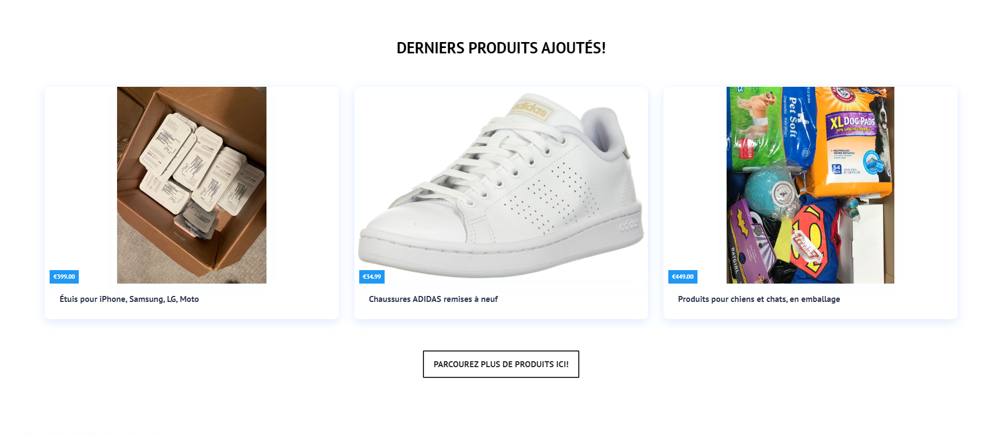

End-of-Studies Project - ShopySolde
During my tenure at SM DEVIS in Ariana, I had the opportunity to collaborate with a team of two on an ambitious end-of-studies project called "ShopySolde." Our objective was to create a liquidation and destocking platform that would streamline the process for both sellers and buyers. As a key contributor, I was responsible for the development of the project from scratch, using the SERN (SQL, Express, React, Node) stack.
To ensure a robust and user-friendly platform, I delved into self-learning to gain proficiency in React, a powerful JavaScript library for building interactive user interfaces. Leveraging my newfound knowledge, I designed and implemented various features that formed the core functionality of ShopySolde. Notably, I focused on crucial aspects such as user authentication, a comprehensive product catalog, and efficient inventory management.
The development process involved working closely with my team to ensure seamless integration of the front-end and back-end components. By effectively utilizing the SERN stack, we achieved a high level of flexibility and scalability, enabling us to adapt the platform to the evolving needs of the industry.
One of the project's highlights was the successful presentation to a panel of evaluators, where we showcased the functionality and technical aspects of ShopySolde. The presentation served as a testament to our meticulous planning, diligent development, and effective implementation of features. We received positive feedback, demonstrating the comprehensive solution we had built
Overall, my experience at SM DEVIS and my involvement in the ShopySolde project allowed me to gain valuable insights into team collaboration, full-stack development, and the application of cutting-edge technologies. It was a rewarding experience that further solidified my passion for software development and showcased my ability to deliver impactful solutions.
Project Repository Link